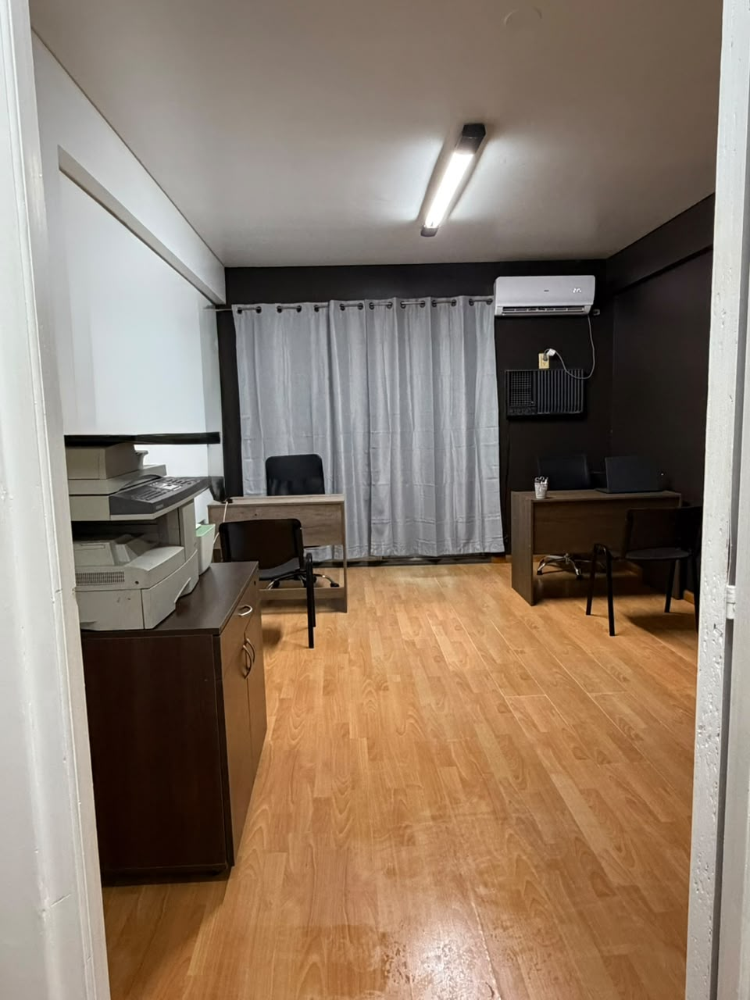

Consultora de crédito · Posadas y toda Argentina
Trabajamos con más de 10 entidades crediticias para conseguirte la línea que mejor se ajusta a tu situación. Gestión 100% online, respuesta rápida y una oficina real donde siempre podés encontrarnos.
Respondemos en el día.
Operamos con más de 10 entidades de crédito para conseguirte la mejor opción
ArgenpesosCrenacCartaSurPrestaFácilRed MutualMutual PilarensesPreveerCreserMutual AlasCrédito Regional
Si alguien te pide un adelanto para "liberar" un préstamo, es una estafa. En Crédito Finan no cobramos nada por adelantado: primero conseguimos tu línea de crédito aprobada, y recién ahí avanzamos. Así de simple.
Por WhatsApp o con el formulario de acá abajo, que son seis datos y nada más. Nos contás cuánto necesitás y tu situación: empleado, jubilado o monotributista. Nada de llamadas raras.
Buscamos entre todas nuestras líneas de crédito la que mejor cierra para tu perfil. Vos no tenés que golpear puerta por puerta: lo hacemos nosotros.
Con la aprobación de la entidad, el dinero llega directo a tu cuenta. Todo online, con seguimiento nuestro de principio a fin.
Completá el formulario y nos comunicamos con vos en el día por WhatsApp. La consulta no tiene costo ni compromiso, y no te pedimos ningún adelanto.
Nos comunicamos con vos en el día por WhatsApp al número que nos dejaste. Recordá que nunca te vamos a pedir dinero por adelantado.
¿Preferís escribirnos directo? Mandanos un WhatsApp

Crédito Finan es una consultora de crédito con oficina propia y atención al público. Detrás de cada gestión hay personas que dan la cara, no un call center anónimo.
No, nunca. Ese es justamente nuestro sello: no pedimos adelantos ni "gastos de gestión" previos. Si alguien te pide dinero para destrabar un préstamo, desconfiá: es la estafa más común del rubro.
Gestionamos préstamos desde $50.000 hasta $10.000.000, en pesos, con planes de 3 a 48 cuotas fijas. El monto y el plazo final dependen de tu perfil y de la entidad que apruebe: escribinos y te decimos en el día qué opciones tenés.
La consulta se responde en el día. Los tiempos de acreditación dependen de la entidad que apruebe tu crédito, pero te acompañamos con seguimiento durante todo el proceso.
No. Somos una consultora de crédito: trabajamos con más de 10 entidades crediticias y buscamos entre ellas la mejor opción para vos. La aprobación y las condiciones finales dependen de cada entidad.
¿Gestionaste tu crédito con nosotros? Contanos cómo te fue por WhatsApp.
Escribinos y en el día te decimos con qué entidad podés avanzar y en cuántas cuotas. Nunca te vamos a pedir dinero por adelantado.